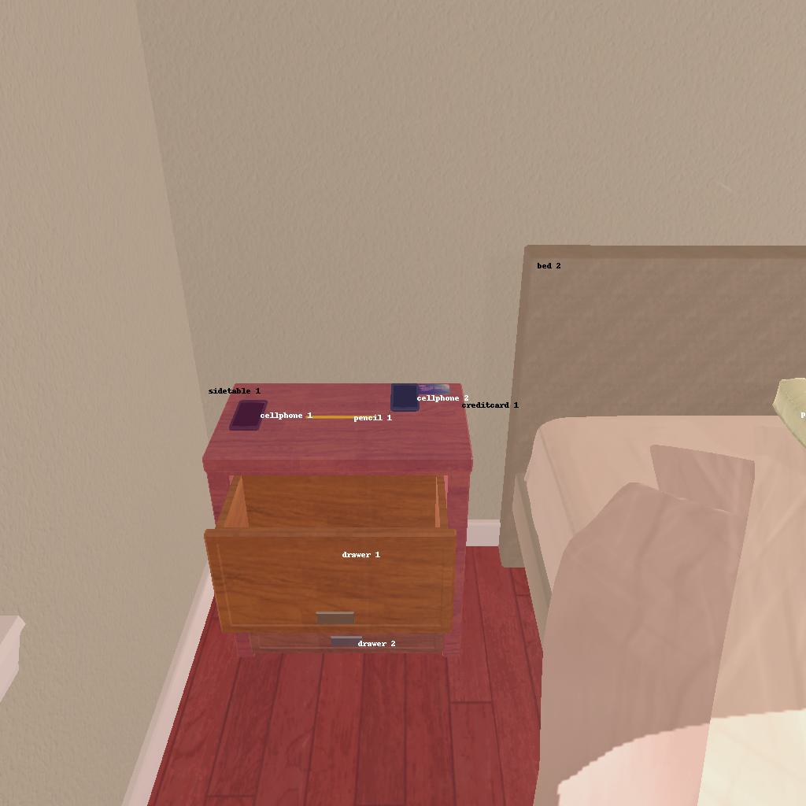

---------------------------------------------------------task: 6---------------------------------------------------------
--------------------------------------------------------------------------------------------------------------------------------------------------------------------
--------------------------------------------------------------------------------------------------------------------------------------------------------------------
Step:--------------------------------------------------------------------------3-------------------------------------------------------------------------------
----------------------------------------
VLM Prompt:
Image1:
Image2:
Image3:
**Instruction**
1. Analyze the provided image to identify all visible household objects, focusing on those relevant to the task description "put some cd on safe."
2. Use the analysis of the image and the task hint "The agent must find an object of the desired type, pick it up, find the correct location to place it, and put it down there." to answer the question: what is the most reasonable action in the choices for the task description "put some cd on safe"?
4. Decide and write the answer using the template: The answer is: (i): , where i is the real number. If there is no desired object in the image, search every place based on **Initial Observation** to find the object. And if no one is exactly correct, choose a similar answer.
**Initial Observation**
You are in the middle of a room. Looking quickly around you, you can see bed (1-2), dresser (1), sidetable (1-2), drawer (1-11), desk (1), garbagecan (1), safe (1)
**Answer Choices**
(1): go to bed 1
(2): go to dresser 1
(3): go to bed 2
(4): go to sidetable 1
(5): go to drawer 2
(6): go to sidetable 2
(7): go to drawer 3
(8): go to drawer 4
(9): go to desk 1
(10): go to garbagecan 1
(11): go to drawer 5
(12): go to drawer 6
(13): go to drawer 7
(14): go to drawer 8
(15): go to drawer 9
(16): go to drawer 10
(17): go to drawer 11
(18): open safe 1
(19): close safe 1
(20): examine safe 1
**Answer**
Let's think step by step by following the instructions.
----------------------------------------
----------------------------------------
Original Response:
First, we need to identify all visible household objects relevant to the task description "put some cd on safe." From the provided images, we can see that Image3 shows a safe labeled "safe 1."
Next, according to the task hint, the agent must find an object of the desired type, which in this case would be a CD. None of the provided images show a CD.
Based on the **Initial Observation**, we haven't looked in drawer 3 to drawer 11 yet. So the next reasonable action would be to search these places to find a CD.
Since we cannot see a CD in the provided images, the next step is to search the unexplored drawers.
The answer is: (7): go to drawer 3. If we don't find a CD there, we continue to the next drawer until we find one.
----------------------------------------
----------------------------------------
>>> Refine Original VLM Response and Get Pure Action: go to drawer 3
----------------------------------------
-----------------------------------------------------------------
Running time: 8.529686450958252 seconds
Total Money: 3.1164199999999997
-----------------------------------------------------------------
-----------------------------------------------------------------
Text Observation:You arrive at loc 7. The drawer 3 is closed.
-----------------------------------------------------------------
UNSUCCEED